악보 디자이너
사용자 설명서
파일을 불러오고, 편집 결과를 확인하고, 수업과 연주에 쓸 악보를 저장하는 단계별 안내입니다.
01. 파일을 불러오고 선택하기
현재 악보 이름을 확인한 뒤 도구를 실행하세요.
- 파일 업로드 영역을 누르거나 파일을 끌어 놓습니다.
- 파일이 두 개 이상이면 악보 위에 파일 탭이 나타납니다. 탭이나 업로드 목록에서 현재 악보를 선택합니다.
- 패널의 조성·파트·마디 수는 현재 악보를 기준으로 표시됩니다. 파일이 두 개 이상이면 패널 머리글의 적용 대상 토글에서 전체 N개(기본)와 현재 파일 중 변환 범위를 고릅니다. 선택은 다음 방문에도 유지되고, 결과 로그와 작업 기록에 대상이 표시됩니다. 중요한 원본은 먼저 내보내세요.
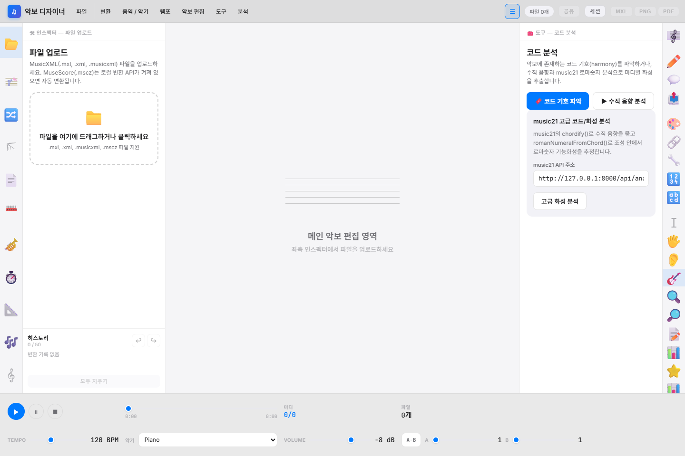
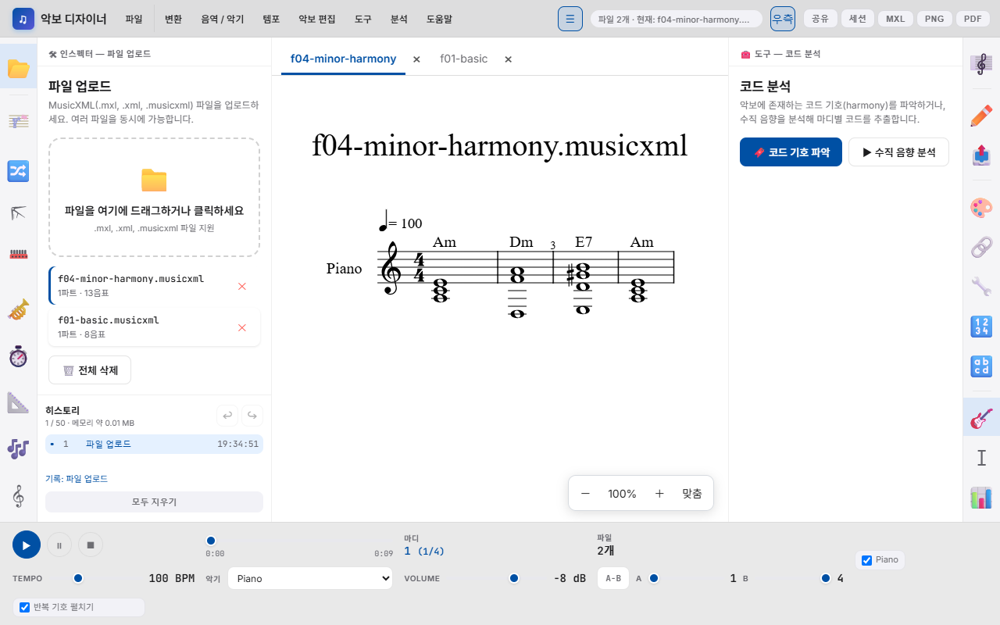
중앙 악보를 확대·축소하거나 너비에 맞출 수 있습니다. 저장 상태와 업로드 결과는 화면 알림으로 표시됩니다.
02. 편집 도구 10개
| 도구 | 사용 방법 |
|---|---|
| 파일 업로드 | MusicXML/XML/MXL 파일을 불러오고 선택·닫기·전체 삭제를 수행합니다. 파트 우선(score-partwise) 형식만 열 수 있으며, 마디 우선(score-timewise)·여러 악보 묶음(opus)처럼 열 수 없는 파일은 이유를 알려 주고 열지 않습니다. |
| 조옮김 | 목표 조·반음·음정을 선택합니다. 특정 조는 가까운 쪽·위로·아래로 중 이동 방향을 고릅니다. 음표와 코드 심볼, 슬래시 베이스를 함께 바꾸고 단조를 유지합니다. 음정 이동은 음이름 간격을 지켜 C에서 감5도 위는 G♭, 증4도 위는 F♯이 되고, 4·5·8도는 완전·증·감 칩으로 고릅니다. 보표마다 따로 적힌 조표도 모두 옮깁니다. 12개 장조 모두: ZIP 다운로드, 열린 악보 불변. |
| 마디별 조바꿈 | 시작 마디와 목표 조, 이동 방향을 정해 구간별 조표와 음높이를 바꿉니다. 단조 악보는 단조 이름으로 고르고, 음이름은 새 조표에 맞는 철자로 씁니다. |
| 카포 | 구간마다 시작 마디와 프렛을 지정합니다. 프렛은 각 구간의 원래 악보 기준이며, 음표와 코드(슬래시 베이스 포함)를 프렛만큼 내려 기타 코드 폼을 만들고 Capo 문구를 넣습니다. |
| 음역대 조정 | 칼림바 등 악기를 선택하면 음표를 옥타브 단위로만 옮겨 음역에 맞춥니다. F♯·B♭ 같은 음이름 철자는 그대로 둡니다. |
| 이조 악기 | 실음과 이조 악보 중 변환 방향을 고릅니다. 악기별 조옮김 정보를 악보에 반영합니다. |
| 템포 조절 | 목표 BPM과 sound/metronome 적용 여부를 고릅니다. 점4분음표처럼 다른 박 단위의 metronome 표기는 같은 빠르기로 환산하고, 음표 길이는 바꾸지 않습니다. |
| 마디별 템포 | 시작 마디별 BPM(20~400)을 지정합니다. 범위 밖 값은 실행하지 않습니다. 재생은 후속 템포의 비율을 유지합니다. |
| Ossia 마디 | 원래 마디 번호로 대체 연주 범위를 선택합니다. 앞 마디의 조표·박자·음자리표를 이어받으며, 못갖춘마디는 0부터 선택하고 저장·복원·공유됩니다. PNG·SVG에는 본보 위에 함께 들어가고, MXL·XML 내보내기에는 포함되지 않습니다(내보낼 때 알림). |
| 음자리표 변환 | 파트와 보표를 고른 뒤 목표 음자리표와 옥타브 자동 이동 여부를 지정합니다. 옥타브를 옮겨도 음이름 철자는 유지합니다. |
03. 분석과 출력 도구 11개
| 도구 | 사용 방법 |
|---|---|
| 파트 추출 | 남길 파트만 켜고 추출합니다. 실행 취소로 되돌릴 수 있습니다. |
| 악보 표기 변환 | 파트 제거(출력에서 삭제), 가사·코드 숨기기, 1줄 보표, 슬래시 음표를 적용합니다. 변환 전 악보는 보관되어 ‘↩ 원본 복원’으로 글자 그대로 되돌릴 수 있습니다(옵션을 모두 끄고 실행해도 같습니다). 옵션을 바꿔 다시 적용해도 보관한 원본에서 다시 시작하므로 겹치지 않습니다. 조옮김처럼 다른 도구로 악보를 바꾸면 보관본은 사라지고, 세션 저장·공유 링크에는 담기지 않습니다. |
| 이미지 / PDF | 미리보기 후 PNG·SVG 또는 여러 파일 PNG ZIP을 저장하고, 용지(A4 세로(기본)·A4 가로·Letter 세로)를 고른 뒤 '인쇄 / PDF로 저장'을 누르면 쪽이 나뉜 인쇄 창이 열립니다. 이미지 크기는 악보 폭(800·1100·1400px 중 선택, 기본 1100px)과 배율로 정해져 창 크기나 화면 확대율과 상관없이 PNG 저장·ZIP·헤더의 PNG가 같은 크기입니다. 미리보기 뒤에 파일을 바꾸거나 악보를 고치거나 악보 폭을 바꾸면 미리보기를 지우므로 다시 실행합니다. ZIP에서 이름이 같은 파일은 (2) 접미로 구분됩니다. |
| 색깔 악보 | 음이름에 따른 색을 음표와 기둥에 적용합니다. 음표 머리의 채움(온음표·2분음표의 빈 머리)은 그대로 둡니다. |
| 화성 쌓기 | 3도 위·아래 음을 조성 기반 또는 일정 간격으로 추가합니다. 추가한 음은 조표에 맞는 철자를 쓰고, 원래 음의 성부·보표·셋잇단 정보를 이어받습니다. 이미 화음에 같은 음이 있으면 건너뛰므로 다시 실행해도 음이 겹치지 않습니다. |
| 코드 도구 | 심볼 일괄 치환, 자동 삽입, 자리바꿈을 적용합니다. 자동 삽입은 마디마다 첫 박의 확정 코드 하나만 넣고, 확정하지 못한 마디는 이유를 로그에 남깁니다. 자리바꿈 베이스는 코드 구성음 철자(E/G♯ 등)로 씁니다. 원위치는 불러온 악보의 원래 슬래시 베이스도 함께 지웁니다. C/E, F#m7b5, Bbadd9, N.C.도 처리합니다. |
| 숫자 악보 | 고정 도법(C=1)·이동 도법·한국어 계이름을 가사 위치에 넣습니다. 이동 도법은 마디마다 그 시점의 조표를 따르고, 옥타브 점은 기준 옥타브(기본 4)에서 떨어진 만큼 최대 3개까지 찍습니다. 다시 만들어도 숫자 가사가 쌓이지 않으며, 다른 도구를 쓴 뒤에도 기존 가사 복원으로 원래 가사를 되돌립니다. 원본 가사 백업은 열린 탭에서만 유지됩니다. |
| 가사 스타일 | 가사 크기·굵기·기울기·글꼴·음높이별 색상을 조정합니다. 적용할 항목을 하나 이상 켜야 실행할 수 있고, 크기는 4~72pt만 적용합니다. |
| 코드 분석 | 기존 코드 심볼 목록이나 수직 음향 분석 결과를 확인합니다. 수직 음향은 박마다 함께 울리는 음으로 판정하고, 음이 3개 이상이거나 완전5도 두 음일 때만 코드로 확정합니다(나머지는 ?). 마디 번호는 악보 표기(못갖춘마디 0)를 따르고, 근음 철자는 그 마디의 조표를 따릅니다. |
| 로마 숫자 분석 | 장조·단조·전위·부속화음과 종지(PAC·IAC·HC·PC·DC)를 분석하고 로마 숫자를 악보에 삽입합니다. 음이 3개 이상 겹치는 박만 화음으로 보고, 단음·두 음 박은 ?로 둡니다. 조가 바뀌면 그 마디부터 새 조로 읽고 표에 조성을 적으며, 이조 악기는 실음으로 분석합니다. V→I에서 둘 중 하나라도 전위면 IAC로 적고 최상성부는 보지 않습니다. 파일을 바꾸거나 악보가 달라지면 이전 결과를 지웁니다. |
| 통계 분석 | 파일·음표·쉼표 수, 음역, 리듬 분포, 작곡 스타일 통계를 봅니다. 마디 수는 첫 파트 기준이고(파트 수를 함께 표시), 음표·쉼표는 전체 파트 합계입니다. 작곡 스타일은 첫 파트 선율 기준이며, 조성은 단조를 Am처럼 구분하고 최저·최고음은 악보 철자 그대로 보입니다. |
분석은 마디마다 그 시점의 조표와 악보에 기록된 음(이조 악기는 실음)을 기준으로 한 자동 해석입니다. 수업 자료에 사용하기 전에 결과를 직접 확인하세요.
04. 조옮김과 화성 분석
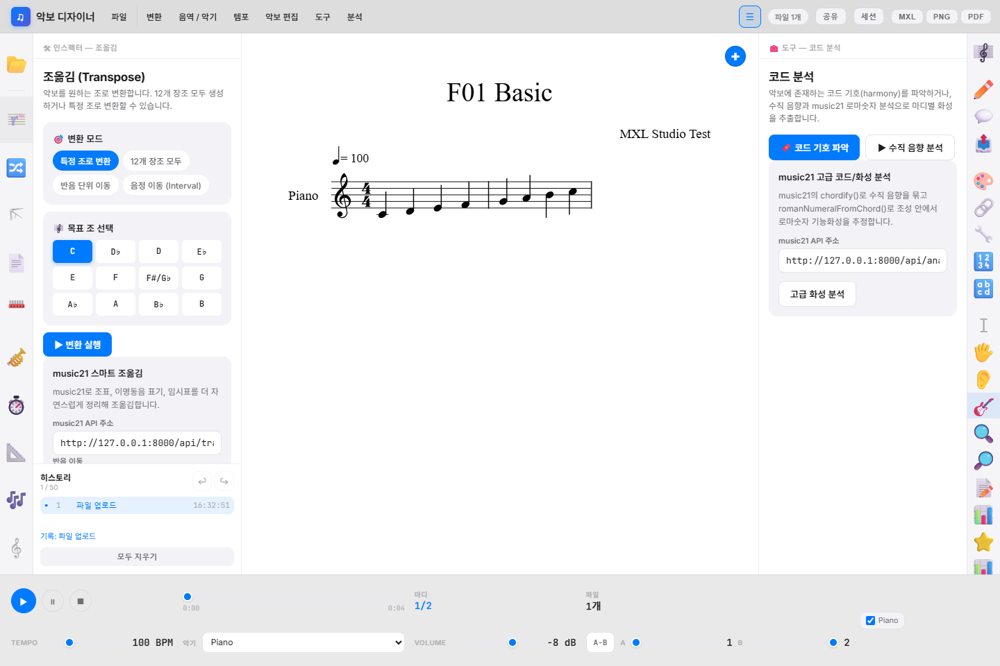
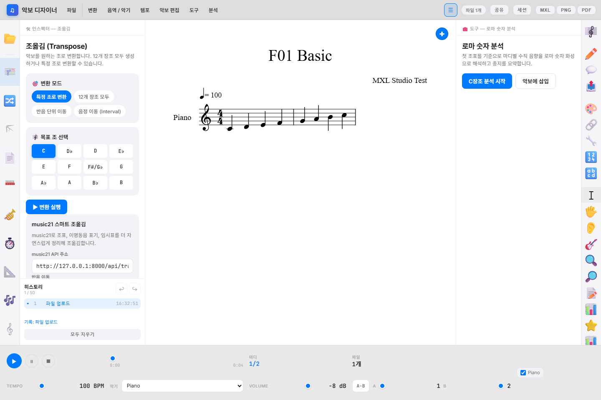
- 조옮김에서 특정 조로 변환·반음 단위 이동·음정 이동 중 방식을 고릅니다.
- 자동, ♯ 우선, ♭ 우선 중 음이름 표기를 선택하고 변환 실행을 누릅니다.
- 12개 장조 모두를 고르면 조마다 .mxl 파일을 만들어 transposed_12keys.zip으로 내려받습니다. 열린 악보와 작업 기록은 바뀌지 않습니다.
- 오른쪽 로마 숫자 분석을 실행합니다. 전위와 부속화음은 I6, V7/V처럼 표시됩니다.
- 악보에 삽입을 누르면 마디 위에 분석 기호가 들어갑니다.
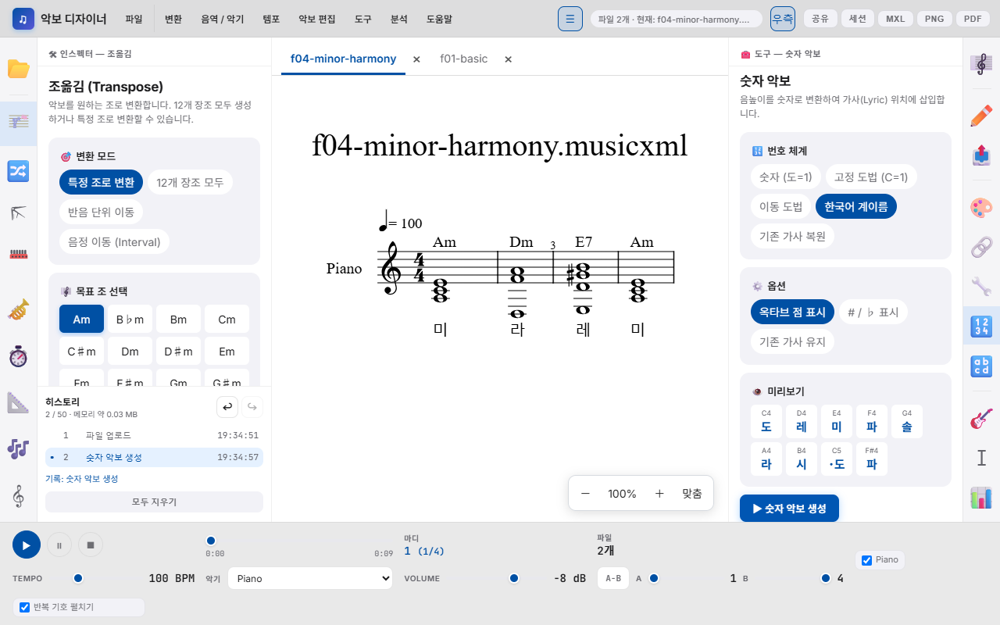
붙임줄과 가사 등 원래 음악 구조는 유지합니다. 코드 종류와 슬래시 베이스도 조옮김에 반영합니다.
05. 작업 기록과 세션
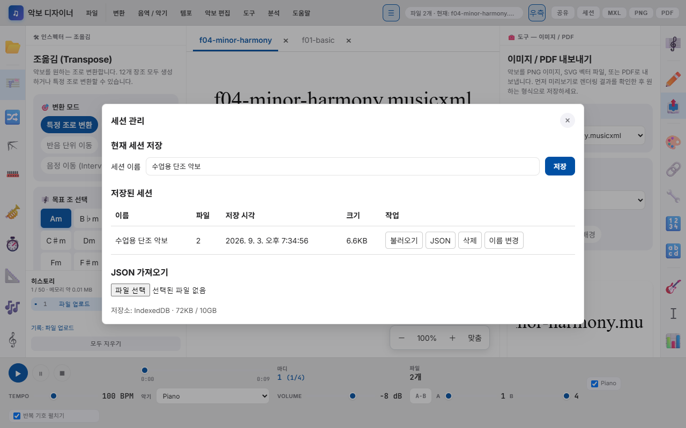
- 상단 세션을 열어 이름을 입력하고 저장합니다.
- 목록에서 불러오기·이름 변경·삭제·JSON 내보내기를 선택합니다. 현재 작업을 바꾸거나 삭제할 때는 창 안에서 확인합니다.
- 다른 컴퓨터로 옮길 때는 JSON 가져오기를 사용합니다.
- 자동저장 안내가 보이면 복원하기로 파일과 현재 선택을 되찾습니다.
06. 저장·공유·내보내기
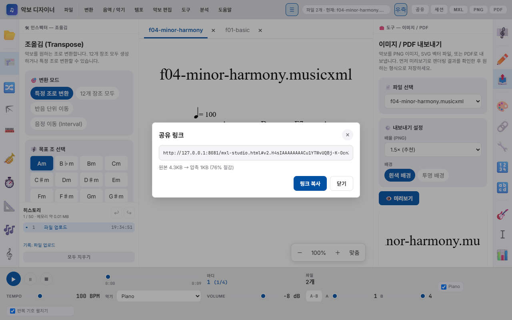
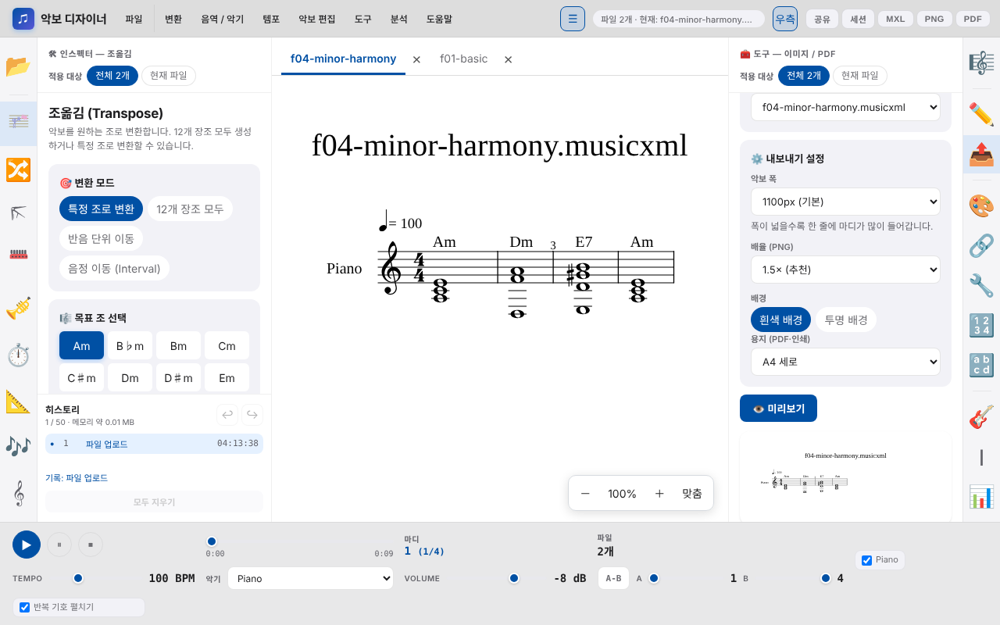
| 목적 | 선택 |
|---|---|
| 다른 악보 프로그램에서 편집 | MXL: 표준 압축 MusicXML, 메뉴의 XML: 비압축 MusicXML |
| 현재 작업 이어하기 | 세션 저장과 JSON 백업. Ossia를 함께 보관합니다. |
| 링크로 악보 전달 | 공유: 선택한 악보의 현재 편집 내용을 URL에 담습니다. 너무 긴 링크는 파일 전달을 이용합니다. |
| 수업 자료·인쇄 | PNG·SVG 또는 PDF. PDF 버튼은 용지에 맞춰 쪽을 나눈 악보만 담아 브라우저 인쇄 창을 엽니다. |
저장된 링크와 파일에 악보 데이터가 포함됩니다. 공유할 상대에게 전달할 자료가 맞는지 확인하세요. PDF는 인쇄 창에서 대상을 'PDF로 저장'으로 고릅니다. 용지는 이미지 / PDF 패널에서 정하며, 인쇄 창의 여백과 배율은 기본값을 그대로 두세요. 화면에서 Ctrl+P를 누르면 악보 대신 안내 한 줄만 인쇄됩니다.
07. 화면과 재생 조절
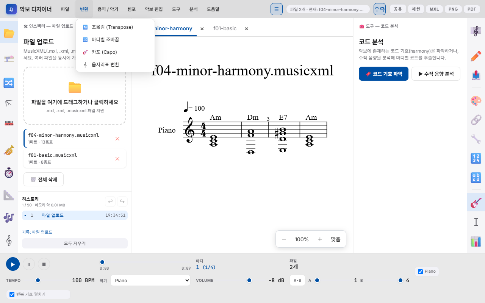
| 조작 | 동작 |
|---|---|
| Ctrl+B / Ctrl+Shift+B | 왼쪽 / 오른쪽 패널 열고 닫기 |
| Ctrl+＋ / Ctrl+－ / Ctrl+0 | 악보 확대 / 축소 / 100% |
| 파일 탭 ← →, Home, End, Delete | 탭 이동과 파일 닫기 |
| 메뉴 방향키·Enter·Escape | 항목 이동·실행·닫기 |
| 패널 사이 경계 드래그 / 방향키 | 패널 너비 조절과 저장 |
하단 ▶를 처음 누르면 재생 라이브러리를 불러옵니다. 파트·악기·음량·BPM을 고를 수 있고, 반복 기호 펼치기는 기본으로 켜져 있습니다. 이 옵션을 끄면 반복과 D.C./D.S. 이동을 따르지 않고 악보에 적힌 마디 순서대로 재생합니다. A-B는 펼쳐진 재생 순번을 기준으로 반복 구간을 정합니다.
08. 모바일과 재생 커서
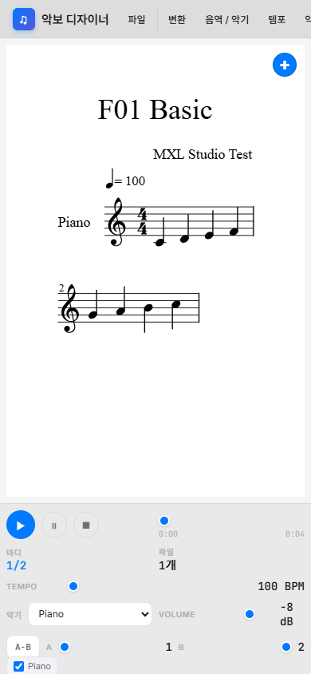
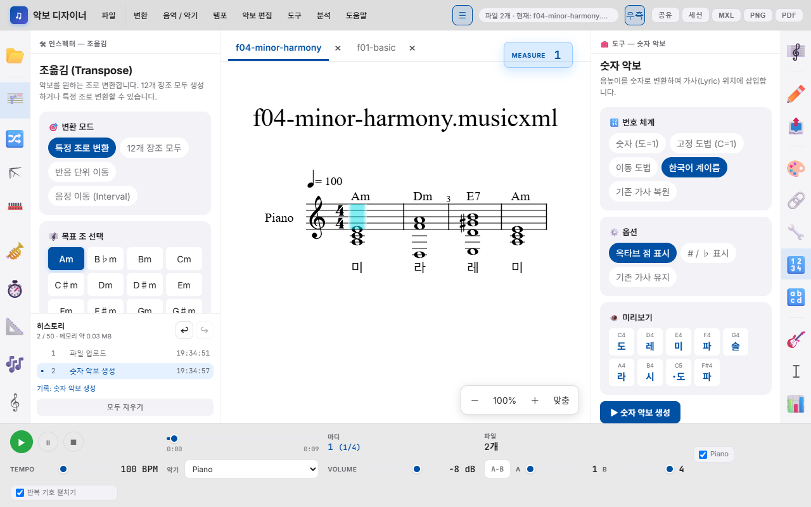
- 모바일에서 상단 도구를 눌러 전체 도구 목록을 엽니다.
- 원하는 도구를 선택하고 실행합니다. 목록으로 돌아가거나 닫기를 눌러 악보를 봅니다.
- 상단 ⋯ 메뉴에서 공유·세션·MXL·PNG·PDF를 선택합니다.
재생 커서는 반복과 A-B 구간에서 원래 마디로 되돌아갑니다. 못갖춘마디 0도 그대로 표시합니다. 기기의 동작 줄이기 설정을 따릅니다.
09. 문제 해결과 예정 기능
문제 해결
- 시작 화면에서 멈추면 네트워크와 외부 라이브러리 차단 여부를 확인한 뒤 새로고침합니다.
- 악보 렌더링 오류에는 다시 렌더 버튼을 사용합니다. 파트·마디 구조가 있는 MusicXML인지 확인합니다. 손상된 MXL·JSON 같은 오류는 한글로 안내하고, 괄호에 원래 오류 문장을 남깁니다. XML 선언(<?xml …?>)이 없는 MusicXML도 열 수 있습니다.
- 재생 로드 실패 시 악보 편집과 파일 저장을 계속할 수 있습니다.
- 큰 악보의 공유 링크나 브라우저 저장 한도에 걸리면 MXL·JSON으로 보관합니다.
예정 기능
다음 항목은 이 버전에 포함되어 있지 않은 예정 기능입니다. 이전 문서의 설명을 현재 기능과 구분해 이 절로 옮겼습니다.
- 주석 메모 레이어와 자유로운 가사 편집
- 운지법 표시, 청음 훈련, 난이도 평가
- QR 코드 공유, 성부 진행·패턴 검색·형식 분석
- 사운드폰트, WAV/MIDI/ABC/LilyPond 내보내기, Web MIDI
- AI 어시스턴트, PWA 및 클라우드 동기화
확장은 설계 문서의 선택 항목인 Phase 9에서 별도로 다룹니다.